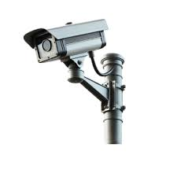

Em um mundo onde a tranquilidade não tem preço, investir em segurança eletrônica é mais do que uma escolha — é uma necessidade. Nossa empresa nasceu com um propósito claro: proteger o que realmente importa para você.
Com tecnologia de ponta, soluções inteligentes e uma equipe altamente especializada, oferecemos sistemas completos de monitoramento, câmeras de alta definição, alarmes modernos e controle de acesso eficiente.
Tudo pensado para garantir proteção 24 horas por dia, 7 dias por semana.
Mais do que equipamentos, entregamos confiança.
Cada projeto é desenvolvido de forma personalizada, considerando as necessidades específicas de residências, empresas e condomínios.
Nosso compromisso é unir inovação, qualidade e atendimento próximo, criando soluções que realmente fazem a diferença no seu dia a dia.
Aqui, segurança não é apenas um serviço — é a nossa missão.
Proteja hoje. Viva tranquilo sempre.
